22nd February 2016:
Hessian free download version is released! A brief postmortem is in order.
Overall, the game project was a successful evolution of the "Metal Warrior" style combat platformer.
It features one large location (a science complex) to explore, more varied enemies than Metal Warrior 4
including proper boss fights, and higher performance code even though it's scrolling the full color-RAM
and also depacking and flipping all sprites in realtime for display.
Unlike MW4, the scrolling is 8-directional, with a maximum speed of 2, so scrolling the screen and
color-RAM could be divided on 4 frames. This makes the scrolling CPU usage predictable and was a large part
of why the game can run smooth. A freedirectional scrolling approach would likely have been prohibitive
CPU-usage wise.
MW4 was structured around the concept of covert operatives or "Agents", and it drew heavy influences from
PC first person games like Deus Ex to have enemy AI that actually reacted to visual and audio evidence.
In contrast Hessian is much more traditional: enemies just check a coarse line of sight (even behind their back
to avoid moments of no action) and if they can see the player, they attack. MW4's freedirectional scrolling allowed
more time for player to see the enemies; to compensate, in Hessian enemy attacks are delayed (according to an "aggression"
accumulator counter), bullets are slower and visible, and executing the "roll" manoeuvre makes the player's hitbox
very small, often avoiding enemy fire completely. As an end result avoiding damage is for the
most part easier in Hessian.
Compared to MW4, the game features more varied and dynamic scripted sequences, including both
NPC interaction and operating machinery in the game world. This is both a positive and a negative.
MW4 had a well-structured framework for doing certain things (speaking with NPCs, NPCs following and
fighting alongside you, and simple interactions like doors, switches and lifts) whereas in Hessian
almost everything had to be coded uniquely, resulting in more work and in some cases more errorprone code.
For future reference, it would be beneficial to prototype the story-related interactions early, and build
better support for them in the common game engine code. In Hessian the focus was sometimes even obsessively
reducing and optimizing the resident engine code for size: hundreds of bytes were optimized from the code
in total.
Story-wise Hessian is not as grand as MW4, but it has a well-defined atmosphere it sticks to, and making
the player character not have any dialogue ended up a (IMO) as a positive decision, as most often it'd be
something superfluous or something that could clash with the player's thinking. Instead of dialogue, the
player makes important choices mostly by choosing the next location to go to.
Like written before, Hessian utilizes dynamic memory allocation for sprites and level map data. This could
be taken even further by allocating and loading actor definitions and movement code dynamically. In
Hessian, having all the actor definitions and common move code in the memory all the time reduced the
available memory significantly, though it didn't yet pose an actual serious problem, and the enemy variety
didn't have to be compromised at any point, compared to MW4 which needed thinking such as "This is a level you
can take your NPC companion to, so it can have only one variety of enemy soldier at once."
Dividing the game story- and level-specific code to max. 2 KB chunks was somewhat troublesome, as sometimes
a good compromise between having all the needed functions resident in one chunk, and having fast enough
load times was hard to reach. A potentially better approach would be to use smaller chunks and a dynamic
allocation approach here too, so that often needed code is kept resident. Doing this could result in the
disk directory containing even more small files than Hessian & MW4, so using an IFFL-loader would be the
logical accompanying step, though with the loss of Kernal loading compatibility.
Using revision control was essential for the project. Doing all development in a public repository was
an interesting experiment that granted 100% visibility into the project (for example when development
was stalled, sometimes for long times) to anyone. It's not something I'd necessarily repeat, but it was
worth trying at least once.
8th February 2016:
Hessian is now feature- and content-complete. What remains now is testing and some more testing, to make sure the game runs stable and all story variations operate correctly. Plus some balance tuning, if needed.
Implementing the complete story, NPC interactions and other ingame texts (computer terminals etc.) took most of January. After that the final tasks were to finish the story interludes and the ending, which crossed into February.
The final stages of the development were quite interesting, with ever diminishing diskspace (see also the Lemon64 thread dedicated to this)
and some contradictory decisions. At first the game was going to have cutscene pictures. I was well into drawing them, until I realized that it'd cause diskspace to run out before even implementing the ending, there would be
some inconsistency with already implemented interlude scenes (ie. by which rationale something is a picture, and something a scripted in-engine scene?) and static pictures couldn't show the changes in the player character's
appearance (e.g. armor and weapons) without a lot of added work. So the same thing happened as with Metal Warrior 4: no cutscene pictures. Instead the game got some more unique scripted scenes, which I believe was better in the end.
The computer texts posed another design/writing problem: I wanted there to be emails back and forth between different characters, so initially a lot of names were random-generated and used as recipients and senders in the messages.
However this didn't feel right, as these characters/names (except for a few exceptions) would not be properly fleshed out. In the end most of the names were dropped, except for well-defined characters who actually do
appear in the game properly, and message subject lines used instead. MW4 tackled the same problem a bit differently: the names in its terminal messages were mostly generic subsection names (like "science" or "security") within
the game's enemy organization.
The ending has three variations, which use the same background (implemented with char graphics as a "level" that isn't used for actual gameplay) but contain different events. A rather large sprite animation took most of the remaining free disk
space, so some creativity was required to get everything in. The ending code is one more 2 KB script chunk, but there was so much code that the ending texts couldn't fit in, so they were "interleaved" in the end screen char graphics data instead.
After all variations were in, there were no more blocks free on the diskside. Only by e.g. using an IFFL-loader, or using the directory track could more data be squeezed in, but that wouldn't either allow feasible fallback Kernal file access on any disk drive (in case of IFFL)
or be compatible with filecopying the game. Luckily everything important regarding the ending got in, but no room was left for e.g. a scrolling "movie credits" sequence.
Wrapping up the Hessian project is very close now, so stay tuned!
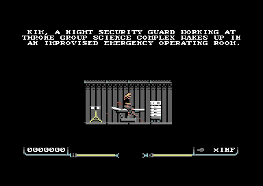
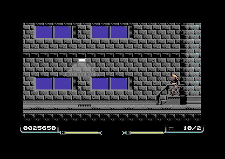
1st January 2016:
Populating the game world with enemies & items is complete, and enough of the story has been implemented that opening up the world and moving through it is possible. Initial tuning of the combat difficulty has been performed
and test runs through the game have been taken, resulting in approx. 2 hours of playtime when knowing what to do and proceeding at a relatively fast pace. A more explorative runthrough while properly experiencing the story (dialogue,
ingame text) is expected to take longer. Those naturally have to be implemented first though, as well as cutscene & ending art.
In more technical matters, it turned out that the dynamic allocation area is large enough for sprites & level maps, so enemy movement code (except for bosses) could be made memory-resident again. This reduces loading
pauses throughout the game, when combat resumes after any story events.
One surprising factor during testing was to notice that most of the time 2-3 enemies already pose enough danger to the player, so more isn't often needed. This means that for the most part, game slowdowns due to CPU overload
are avoided. In part this is also because the movement & AI routines are faster (simpler) than Metal Warrior 4, where 2-3 enemies + the player shooting + the enemies shooting and scrolling could already cause overload. 2-3
enemies may sound little compared to e.g. Turrican, but the game rhythm seems to naturally settle for a more tactical and slow-paced approach, with occasional bursts of action.
At this point it's quite safe to say that Hessian will be released during 2016. Thanks to everyone who has been patiently waiting for the game, the end is finally in sight :)
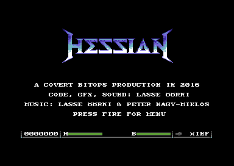

8th December 2015:
Quite a bit of time has passed since last update, but progress has also been significant. All enemy actor graphics, movement & AI behaviors are in. There are about 30+ types of enemies or hazards total, and 5 boss enemies.
The next step will be to populate the game world with the enemies, as it's still empty apart from the bosses and a few statically placed enemies such as ceiling gun turrets.
The game supports two enemy mechanisms: first is enemies that are explicitly placed in the world editor. For these an alive/killed flag (1 bit) is tracked in the game state, and they will not come back after being destroyed once.
Another is spawning enemies, which allows each room or zone to define the kinds of enemies that will be spawned, the frequency of their appearance, and how many will appear on each visit. The spawning enemies are simply forgotten
each time the player enters or leaves a room, so that they will not overwhelm the player. Also there will never be more than 3 spawning enemies at once, to not overwhelm the CPU and sprite multiplexer.
After populating the world, work still remains to create the non-hostile characters, story events, all ingame text, possible cutscene graphics etc. So it's not nearly done yet, but definitely getting there. Current free space
on the diskside is 151 blocks, which should be enough.
In addition to disk space taken, the game's resident code size has also been increasing steadily, mainly due to the actor definitions and some resident enemy & AI helper code, but that's not alarming either yet, and once the
friendly characters are in, the code growth should stop completely.
To keep fixed memory allocations to a minimum, sprite graphics and level map data are loaded and allocated dynamically during gameplay, while the actor movement code is loaded in 2 KB chunks. The same loadable code mechanism
is used to implement the game story events and dialogue; it's an expansion of Metal Warrior 4's loadable code system, which only used it for the story + menus and kept all actor code resident. In Hessian there is a "main"
enemy actor code chunk that is present during normal gameplay, while boss enemies have their own chunks; during boss encounters there are no ordinary enemies onscreen. Similarly there will not be friendly encounters (dialogue) and
combat simultaneously, as the player character stops during conversation (while the game keeps running) and would be defenseless. This is again in contrast to MW4, which paused the game completely during dialogue, and could e.g.
leave the player hanging in mid-air :)
Here's the last enemy that was created for the game, hopefully not spoiling too much:
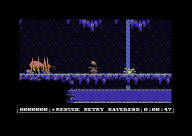
3rd October 2015:
Initial enemy AI movement + attack modes for humanoid enemies (that use the same weapons as the player) have been written. AI pathfinding has been rewritten to be simpler and more immediate, similar to MW4.
The game's code and data structures have seen significant size optimization. Particularly the old pathfinding (which was based on decision making in each stair / ladder junction) wasted much memory,
but still did not work properly in all situations, so it was good to get rid of it. The old pathfinding also required classifying each tile, and getting rid of it means getting rid of the classifying data and freeing
up some disk space from each world tile/charset. Also, size/speed-optimizing the Exomizer 2 decompression code has sped up loading and made it possible to use the C64 original disk interleave (10).
After this, it's time to dive into enemy sprite design and writing additional specialized AI, for example for flying enemies.
15th September 2015:
Initial pass on the whole game world is done! Stats at this point: 667 screens, 15 charsets, 15 level loads, 216 blocks free on disk, time taken about 3 and half months.
These final screenshots from this phase show an elevator from the inside, which was the last screen to draw, and some self-plagiarism.
The next step is likely going to be working on the enemies, both their graphics & AI.
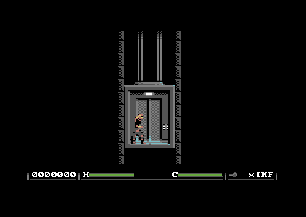
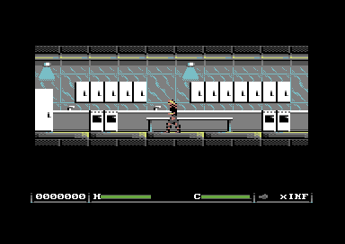
25th August 2015:
At 430 screens and 281 free blocks on the diskside! Likely over a 2/3 of the game world done now, what practically remain are various endgame locations.
Planned or no, it seems that Hessian ends up tributing Fist II in some ways. Its manual promised underwater caves to be explored by swimming, while your energy (oxygen) depletes, but those were never included in the actual game.
Now, almost 30 years later, Hessian will fulfill the promise. Also, whenever the air is poisonous, the background color will flash black...
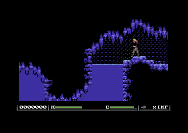
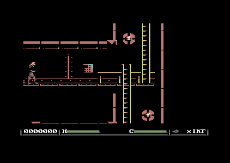
6th August 2015:
All existing level content has been imported into the large game world structure, with quality edits and added world sections along the way. So far this equals to 9 filled char/tilesets, and about 300 screens divided into 8 loads.
It's probably about halfway done.
Because of the large amount of stairs, the movement scheme was adjusted to be as in Metal Warrior 4: hold up to move up stairs at junctions, instead of having to jump onto stairs leading up. As a downside
you can no longer jump straight up by pushing the joystick up, but instead diagonal input is needed to jump.
Finally, here's the "master" game world diagram, where I color over major areas when each has been done (purposefully small to not spoil too much), and a lab area screenshot.
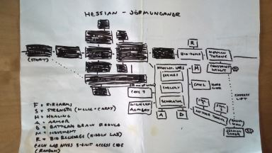
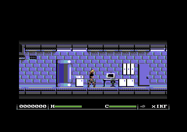
22th July 2015:
The game world is progressing, now totaling 8 charsets (6 should already be final). However navigating it wasn't always satisfying, as like Metal Warrior 4 it relied heavily on entering doors "into" the screen, which would have the
potential to disorient the player (as well as the game world author!) Therefore, most of these doors should be eliminated and replaced with horizontal doorways to preserve a logical 2D layout (think for example Metroid / Castlevania.) Furthermore, different areas
of the world might need the same charset, for example service / utility corridors both in the basement and above the other rooms.
To fix these shortcomings, a new world editor tool was written, which is able to edit the whole game world at once: each room or "zone" can specify the charset it wants to use, and to which "level load" it belongs.
Each load can be max. 256 blocks wide, so that 8-bit block coordinates for objects and actors can be calculated within it. The editor has also other improvements compared to the previous, like the ability to zoom out the map to see an overview of a larger part at once,
and making horizontal links between zones (the most common case for level objects) with a single mouse click.
It's also now legal to define zones that don't fill the whole screen vertically: this both reduces memory use of each load, and makes it possible to construct more realistic building layouts where there isn't unnecessary space between the floors.
Now the work continues with rearranging the existing levels to use the new "large world" structure, and in the process adding more vertical navigability.
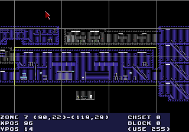
29th June 2015:
Third and fourth levels done, bringing the total gameworld size to 130 screens. Also composed 8 short battle / cutscene / interlude songs.

7th June 2015:
Second level done. Total gameworld size is about 60 screens now. For comparison, Metal Warrior 4 is roughly 950 screens, so there's still a bit to go :) though it's likely that Hessian's raw gameworld size won't be as much, as it's concentrated on one location instead of having a travel / world map mechanic.
2nd June 2015:
The first (beginning) level graphics for the new story & setting are done! It's a fairly standard warehouse setting, but more is to come.
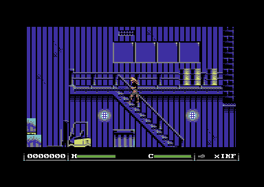
Note the changed status panel layout. It's now more oldschool with a score display included. Next to the health bar there's a battery charge meter on the right.
That brings us to the subject of the protagonist and the story setting: you take the role of Kim, a low-clearance security guard working the night shift at a Throne Group science complex. When the Group's advanced inventions spiral out of control, she gets the unenviable part of becoming an augmented, misanthropic, heavily armed savior.
As the side-effect of a nanotechnical emergency surgery after a near-fatal trauma (which also grants her the possibility of additional "upgrades" for example to strength and mobility) she now depends on battery power, which the right-side bar represents. As long as there's sufficient charge left, health will automatically regenerate.
Finally, a few words on the design process:
The "abandoned" story versions of Hessian taught an important lesson: as a game designer you should be able to imagine the game in your head from the beginning to end, with sufficient detail. If not, there's something wrong, for example some part being unclear or overambitious. Now I'm able to do that, while I previously couldn't, which no doubt should benefit long-term motivation (as I know exactly what still needs to be done) and make finishing this quite long project a reality at last!
(Btw. the lesson isn't even anything new, Metal Warrior 4 went through a similar process of over-ambitious initial scenarios being abandoned...)
30th April 2015:
Resurrection of the work-in-progress page! The Hessian game project seems to be ever-mutating, as it now has a new story and a new protagonist. As a consequence of the changes, two songs were excised from the game, as they only had relevance in the old story, and are now released on the music page.
A brief taste of the new storyline (dialogue may not be final):
"The whole idea, how everything got started, demanded visionary madness. How mankind would survive the journey to another planet, if the need arose. The answer: not as humans..."
On the code front, the engine was changed to spread the work between frames as evenly as possible, and to do hardscrolling of the double-buffered screen RAM early, if the game still has time until it can update the next frame. During these changes, the game also gained one more character row to the play area, bringing it to 22 visible rows. Let's see if that can be kept without running into rastertime trouble...
Music was also made a bit louder, to match e.g. the volume level in Metal Warrior 4, at the cost of some dynamic range in the drums. That's basically 8-bit loudness war :)
Also, as Google Code is shutting down, development was moved to GitHub.